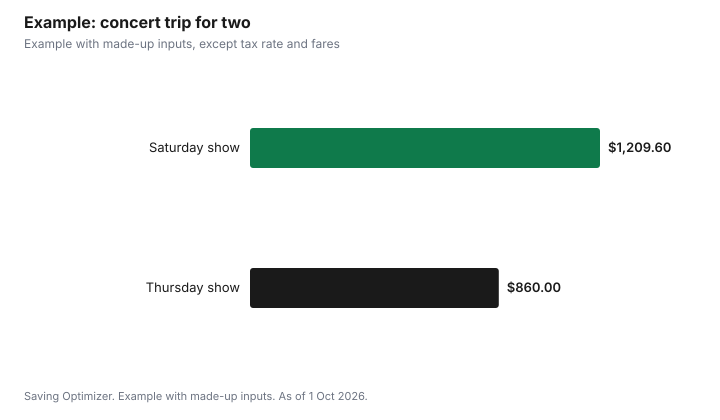

Entertainment · Canada
Travelling for a Concert in Toronto or Vancouver: A Full Budget
Before you buy tickets for a show in another city, price the whole trip. For many people the ticket is less than half the cost: getting there, one or two hotel nights, food and local transport add up fast. In Toronto, hotels charge a 6% Municipal Accommodation Tax on the room since 1 August 2026, on top of the room rate. In Vancouver, starting a SkyTrain trip at the airport adds a $6.50 AddFare. Choosing a weeknight show, sharing a room and using transit to the venue are the biggest levers. If the city is within a few hours, a day trip with a late train or bus home can beat staying over.
Key takeaways
- Price travel and lodging before buying concert tickets.
- Toronto Municipal Accommodation Tax: 6% on the room portion since 1 August 2026.
- TTC adult fare: $3.30 by credit or debit tap.
- Vancouver: $6.50 YVR AddFare on trips starting at the airport stations.
- Weeknight shows and shared rooms cut lodging costs the most.
- Example with made-up inputs: a $1,210 trip for two becomes $860.
The full cost of a concert trip
| Line | Notes | Amount |
|---|---|---|
| Tickets, all-in | Price with fees and taxes | |
| Getting there | Flight, train, bus or gas and parking | |
| Lodging | Nights × room rate, plus taxes | |
| Local transport | Airport transfer and to the venue | |
| Food | Meals and drinks | |
| Merch and extras | Set a cap | |
| Total |
Toronto: hotel tax and transit
The City of Toronto says that effective 1 August 2026, the temporary 8.5% Municipal Accommodation Tax rate ended and the MAT on transient accommodation is now 6%. It applies to the room portion of stays of four hours or more. Other services, such as food and beverage, room service, internet and phone, are excluded if itemized separately. Other taxes can apply on top, so compare the total price at checkout, not the nightly rate.
For getting around, the TTC charges the adult fare of $3.30 when you pay by tapping a credit or debit card, and discounted fares are not available with that payment method. If you are staying a few days, check the TTC's fare options before you go.
| Item | Rule or price |
|---|---|
| Municipal Accommodation Tax | 6% of the room portion, from 1 August 2026 |
| MAT scope | Stays of 4 hours or more; separately itemized services excluded |
| TTC adult fare by credit or debit tap | $3.30 |
Vancouver: transit from the airport and to the venue
TransLink says its fares increased by an average of 5% on 1 July 2026. Journeys starting at YVR-Airport, Sea Island Centre or Templeton stations include a $6.50 YVR Airport AddFare at all times. A single fare is valid for 90 minutes across bus, SkyTrain and SeaBus. Concert-goers benefit from one rule in particular: all trips starting after 6:30 pm on weekdays, and all weekend travel, are a 1-zone fare, so getting home after a show costs the lowest fare.
| Rule | Detail |
|---|---|
| Fare change | Average 5% increase on 1 July 2026 |
| YVR Airport AddFare | $6.50 on trips starting at YVR-Airport, Sea Island Centre or Templeton stations |
| Evenings and weekends | All trips after 6:30 pm weekdays and all weekend trips are 1-zone |
| Transfer window | A single fare is valid for 90 minutes |
| Fare evasion | Failing to pay can result in a $173 fine |
Tickets: buy from the primary seller first
For shows in Ontario, the province says resale tickets cannot be sold for more than the original total price; a buyer pays at most that plus applicable taxes and the platform's standard fees, and gets a written money-back guarantee if the ticket does not admit them or the event is cancelled. Outside Ontario, check your province's rules before buying resale. See ticket fees and all-in pricing and avoiding resale scams.
Getting there
Compare train, bus, driving and flying on door-to-door cost and time, including parking at both ends and transfers. For a drive, add gas and downtown parking near the venue, which can be expensive on event nights. For a flight, add bags and the airport transfer, such as Vancouver's AddFare. Booking travel only after you have tickets avoids paying for a trip to a show you could not get into.
Day trip or overnight
| Factor | Day trip | Overnight |
|---|---|---|
| Distance | A few hours by train, bus or car | Longer trips or flights |
| Show end time | Late transport home available | Last train or bus leaves too early |
| Cost | No lodging | Lodging plus taxes |
| Comfort | Long day | Rest before travelling home |
| Weekday or weekend | Easier on a weekend | Weeknight hotels often cheaper |
Check the last departure home before you buy tickets; encores and crowds can push you past it. If you stay over, a weeknight show often means cheaper rooms than a Friday or Saturday.
Example with made-up inputs: two people, one night
These numbers are an example with made-up inputs, except the tax rate and transit fares. Two friends travel to Toronto for a Saturday show. Tickets are $300 all-in for both, return travel $260, one hotel night at $340 plus 6% MAT ($20.40) and other taxes ($44.20), taxis to and from the venue $70, food $140 and merch $35, for $1,209.60. Choosing the Thursday show instead, they pay $300 for tickets, $260 for travel, a $220 room with the 6% MAT ($13.20) and other taxes ($28.60), the TTC both ways at $3.30 each per trip ($13.20 for two people), food $25 after eating before the show, and no merch, for $860.
| Line | Saturday | Thursday |
|---|---|---|
| Tickets, all-in | $300 | $300 |
| Travel | $260 | $260 |
| Hotel room | $340 | $220 |
| MAT at 6% | $20.40 | $13.20 |
| Other taxes (made-up) | $44.20 | $28.60 |
| Local transport | $70 taxis | $13.20 TTC |
| Food | $140 | $25 |
| Merch | $35 | $0 |
| Total | $1,209.60 | $860.00 |

Steps
- Price travel and one night of lodging before buying tickets.
- Compare a weeknight show with the weekend.
- Check the last train or bus home if you plan a day trip.
- Book a room near transit and share it.
- Use transit to the venue; in Vancouver, evening trips are 1-zone.
- Set food and merch caps before you go.
For festivals, see music festival passes. For a city break built around a show, see a Canadian city staycation budget.
Sources
- City of Toronto, Municipal Accommodation Tax: rate and exemptions, toronto.ca, as of 1 Oct 2026. 6% from 1 August 2026; scope.
- Toronto Transit Commission, Fares and passes, ttc.ca, as of 1 Oct 2026. $3.30 adult fare by credit or debit.
- TransLink, Pricing and fare zones, translink.ca, as of 1 Oct 2026. July 2026 increase, YVR AddFare, evening and weekend 1-zone, 90-minute fares, fine.
- Government of Ontario, Buying tickets to events in Ontario, ontario.ca (updated 4 Jun 2026), as of 1 Oct 2026.
- Ticket, travel, hotel, other tax, food and merch amounts in the example are an example with made-up inputs.
Frequently asked questions
What is Toronto's hotel tax in 2026?
The City of Toronto says the Municipal Accommodation Tax is 6% on the room portion of stays of four hours or more, effective 1 August 2026, after the temporary 8.5% rate ended. Other taxes can apply on top.
How much is the TTC fare?
The TTC adult fare is $3.30 when paying by credit or debit tap, as of 1 Oct 2026. Discounted fares are not available with that method.
How much is the SkyTrain from Vancouver airport?
Trips starting at YVR-Airport, Sea Island Centre or Templeton stations include a $6.50 YVR AddFare on top of the regular fare.
Is transit cheaper after a Vancouver concert?
Yes. TransLink says all trips starting after 6:30 pm on weekdays, and all weekend trips, are a 1-zone fare.
How can I save on a concert trip?
Pick a weeknight show, share a room near transit, take transit to the venue, eat before the show and set a merch cap.
Can concert tickets be resold above face value in Ontario?
No. Ontario caps resale at the original total price plus applicable taxes and the platform's standard fees.
Researched and drafted with AI assistance and fact-checked against official Canadian sources. How we create content.
Disclosure: Saving Optimizer may earn a commission if a partner link is added later, such as a hotel or travel offer type. No partnership is claimed on this page. Education only.